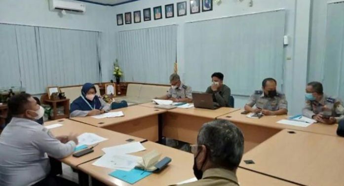
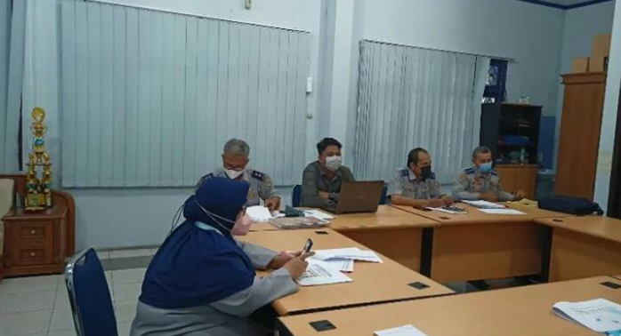

Berita & Regulasi Terbaru


"Setiap rencana pembangunan pusat kegiatan, permukiman, dan infrastruktur yang akan menimbulkan gangguan Keamanan, Keselamatan, Ketertiban, dan Kelancaran Lalu Lintas dan Angkutan Jalan wajib dilakukan analisis dampak Lalu Lintas."
"Hasil analisis dampak Lalu Lintas sebagaimana dimaksud pada ayat (1) merupakan salah satu syarat bagi pengembang untuk mendapatkan izin Pemerintah dan/atau Pemerintah Daerah menurut peraturan perundang-undangan."
Analisis dampak Lalu Lintas yang tertuang pada UU Nomor 22 Tahun 2009 tentang Lalu Lintas dan Angkutan Jalan di Pasal 100 Ayat 1 juga menyebutkan sebagaimana dimaksud dalam Pasal 99 ayat (1) dilakukan oleh lembaga konsultan yang memiliki tenaga ahli bersertifikat.
Dan Hervian Handika Sugasta, S.T., M.T. selaku penyedia jasa telah tamat pendidikan dan pelatihan Penyusunan Analisis Dampak Lalu Lintas selama 9 hari (70 JP) yang diselenggarakan oleh POLITEKNIK TRANSPORTASI DARAT BALI berlokasi di Gianyar juga dinyatakan Lulus Uji Kompetensi/ter-Sertifikasi Tenaga Ahli Penyusun Analisis Dampak Lalu Lintas berdasarkan Surat Keputusan Direktur Jenderal Perhubungan Darat.